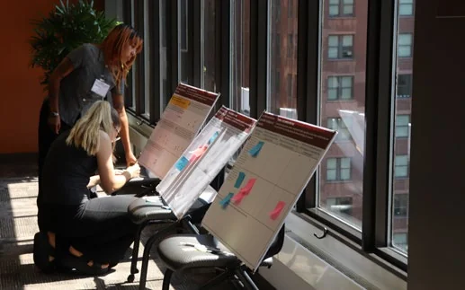
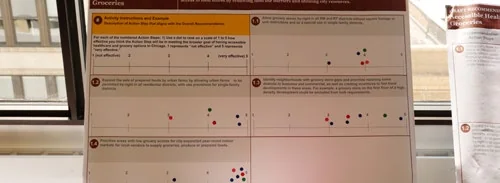

At What Cost?
How Chicago's Outdated Zoning and Land Use Systems Thwart Inclusive Growth
Introduction
Chicago's zoning code shapes far more than building heights and lot sizes: it determines who can afford to live here, where economic opportunity takes root, and how equitably the city's future growth is shared. This report presents findings from a three-year study by Metropolitan Planning Council, examining how zoning law and regulation have influenced housing availability and affordability, business vitality, and adaptation to climate risks across the city. Grounded in the values of equity, sustainability, and public health, the research draws on an extensive engagement process involving more than 700 individuals from over 450 organizations, including government agencies, community organizations, ward offices, and private sector partners.
The findings reveal a city constrained by its own regulatory framework. Just 11% of Chicago is zoned for multifamily housing1, while 41% is reserved for the most expensive and land-intensive housing type: detached single-family homes. The consequences of our outdated zoning system are stark and geographically concentrated. For example, 60% of new housing built since 2006 has landed in just five community areas, while 45 of Chicago's 77 community areas have added fewer than 500 new homes in nearly two decades. Meanwhile, Black and Latinx residents have experienced sharp declines in affordability over the last two decades.
60% of the approximately 120,000 new housing units in the city built since 2006 were concentrated in just 5 community areas.
Interactive chart redrawn for this site from the figures printed in the source.
These disparities extend beyond housing into the economic fabric of neighborhoods. Business concentration follows similar patterns of inequity: majority-white census tracts average 14.7 businesses per 1,000 residents, compared to just 8.6 in majority-Black tracts, a gap tied in part to how zoning allocates space for walkable, pedestrian-oriented commercial corridors. Zoning also has tangible impacts on air, water, and land. Our research shows that Latinx Chicagoans make up 50% of the population in the top fifth most air-polluted areas—and that Latinx neighborhoods tend to have more land zoned for industrial use. These disparities pose both health and economic risks for Chicago’s population.
This report argues that hyper-local control, absent a coherent citywide strategy, comes at a real cost to residents' lives. What follows are the key findings and policy recommendations to build a more equitable and thriving Chicago.
illustration: Lucie Van der Elst
Citywide problems require citywide solutions: A way forward on zoning and land use
Chicago is a city known for what we’ve built—and what we’ve rebuilt. We are renowned for our architecture, our elevated trains, our sweeping public parks, our lakefront skyline, and our people. When the city we had created was destroyed by a historic fire, we marshaled the industry and innovation of the time and built it again.
Our story of rebuilding is also one of segregation and harm. Highways carved up our neighborhoods, rampant redlining and exclusionary zoning practices blocked families in Black and Latinx communities from homeownership and wealth building, and polluting industries left some communities with unhealthy air and contaminated land that is still in need of remediation. Just as we have rebuilt our skyline after tragedy, our task now is to rebuild toward a future that addresses the wrongs of our past.
We need to craft citywide solutions to citywide problems. We are in a time of skepticism about cities. And the challenges are real: new housing is being built in too few neighborhoods, and the costs of housing continue to rise faster than wages. Too many lots and storefronts are sitting vacant, while small business owners struggle to navigate complicated policies to get businesses off the ground. Across Chicago, all residents are exposed to unhealthy levels of air pollution, and some communities still bear a disproportionate burden. All of these are complex land use questions that the city has a responsibility to tackle.
Citywide zoning and land use reforms are a chance to flex our citywide muscle: an opportunity to prove that cities can work, while improving life for all Chicagoans. The recommendations below are informed by MPC and Urban Institute’s stakeholder-guided research, and the perspectives we heard from hundreds of Chicagoans over the course of the Zoning and Land Use Assessment—experts and everyday residents alike. These are reforms that take a citywide approach. We can allow the construction of more homes without project-by-project aldermanic approval, like the two-to-four flats that already fill our neighborhoods but remain illegal to build and rebuild throughout much of the city. We can remove the requirement for new small businesses to navigate expensive zoning relief processes. And we can modernize our zoning to allow areas near transit to evolve into dynamic and walkable places to live and work.
The result has been that Chicago is seen as too unpredictable a place to build, housing continues to become more expensive, and segregation continues to divide our city.
Aldermanic prerogative—Chicago’s version of hyper-local control—is standing in the way of building a more equitable future for our city. Aldermanic prerogative is a deeply rooted practice here. Through policy and practice, City Council and other government bodies defer to the local alderperson when making decisions about development proposals. Because Chicago’s current zoning and land use policies restrict what’s possible to build “by-right”—under the current zoning rules—many projects can’t advance without the blessing of the local alderperson. This gives alderpersons virtually unquestioned control over what gets built within the boundaries of each of the 50 separate wards. The result has been that Chicago is seen as too unpredictable a place to build, housing continues to become more expensive, and segregation continues to divide our city.
Our neighborhoods have different needs, but aldermanic prerogative is not an effective stand-in for neighborhood desires. Each alderperson approaches their role differently. Some have local zoning advisory boards composed of hand-selected residents, local businesses, or local institutions. Some solicit feedback, hold community meetings, or encourage developers to hold meetings. And some do none of these things, negotiating directly with developers. Even when alderpersons receive input from residents, there is no mechanism to check whether this feedback is representative of their constituents, or whether it simply represents those with the time and resources to engage. At the same time, there is also no way to ensure that feedback gets implemented—the power remains the alderperson’s to wield as they wish.
The current system pushes our politics toward territorialism and zero-sum thinking. Our challenges are not contained within individual wards, and the solutions are not either. The availability and affordability of new homes, the vibrancy of our business corridors, and the role of industry in our neighborhoods are all citywide issues, and citywide zoning and land use policy could be powerful tools to address them. But for over a century, aldermanic prerogative has prevented this citywide approach, keeping our elected officials locked in political infighting rather than common-sense policymaking.
Zoning reform is not a silver bullet. There are generational challenges ahead. Many factors beyond zoning shape our communities, such as public and private investment and disinvestment, community organizations, market incentives, and tax structures. Zoning changes that make room for more homes must be paired with policies that prioritize and incentivize the creation and preservation of homes affordable to the lowest-income Chicagoans. Meanwhile, the unusually large size of City Council for the size of our population, our lack of at-large council members, and our lack of a city charter all fuel our culture of unchecked aldermanic prerogative. And with our piecemeal approach to planning, we lack a way to bring in many voices to conversations about development without getting sidetracked by hyper-local opposition, or piling all of a community’s legitimate needs onto a single development. Zoning reform alone will not solve our city’s fundamental and interrelated problems of resource allocation and governance.
Yet zoning reform is a worthwhile citywide project. With zoning and land use reform as a foundation, we can build toward a new Chicago. We can reimagine our policies—zoning and beyond—to build a place where the inequitable outcomes we see reflected in our research no longer persist. We can build a place where families of all incomes can afford a place to live; where all Chicagoans have access to transportation that connects them; where vibrant, livable communities replace empty lots and small businesses can grow without unnecessary barriers; and where everyone can breathe fresh air and drink clean water. To get there, we need a new collaborative and forward-looking status quo that empowers Chicagoans—not ward-by-ward, but across the city.
At a workshop, participants review and share feedback on research and policy recommendations developed during the Zoning and Land Use Assessment.
Summary: challenges, visions, and policy recommendations
- Legalize 4-flats and ADUs citywide: At minimum, allow housing types with up to four units by-right and additional dwelling units (ADUs) in all residential areas.
- Legalize 6 stories near transit: At minimum, allow apartment buildings with up to 6 stories by-right near rail stations and the most frequent and highest-volume bus lines.
- Decrease reliance on Planned Developments for multifamily construction: Right-size thresholds for Planned Developments so more multifamily housing can be built by-right.
- Use zoning tools to promote deep affordability: Prioritize and incentivize affordable housing (fast-track zoning approvals for affordable development, prohibit reactive downzoning, and protect against the loss of naturally affordable units).
- Zone for a dynamic mix of uses near transit: Allow more opportunities for Chicagoans to live, work, and visit places near transit, especially in areas with fewer jobs and/or higher vacancy rates.
- Expand pedestrian streets near transit: Standardize the use of the pedestrian street designation near transit and modernize pedestrian street eligibility and standards.
- Bring small-scale business into neighborhoods: Increase the types of businesses allowed in residential neighborhoods, like home-based and small-scale businesses.
- Update zoning for modern industry: Re-classify manufacturing and industrial uses based on measurable benefits and harms—such as jobs, pollution, environmental impacts, and public health impacts—to encourage low-impact, job-dense industry.
- Protect overburdened communities from cumulative impacts: Require a holistic review of the expected health and quality-of-life impacts of all proposed intensive industrial facilities.
- Leverage unbuilt land for permeable surfaces: Use zoning to ensure unbuilt land helps counter flood and heat risk, by requiring or incentivizing permeable surfaces and green infrastructure in setbacks open space, parkways, and parking lots.
- Target climate-vulnerable areas for mitigation strategies: Prioritize communities most vulnerable to heat and flooding for more green space and remediation.
- Modernize special uses: Allow most current special use categories by-right, with accompanying use standards. Require Zoning Board of Appeals (ZBA) review only for uses with likely impacts on health and safety.
- Reassess other zoning relief categories: Conduct a review of variation and administrative adjustment requests to determine zoning code updates.
- Centralize information about zoning: Provide a central hub for plain-language materials around zoning standards and processes, prioritizing information that facilitates housing and small business development.
- Close zoning data gaps: Standardize and publicize data on zoning processes and outcomes.
- Periodically update zoning to align with a planning vision: Require regular reviews of the zoning code and map based on comprehensive citywide planning that meaningfully engages the public.
- Improve public input processes: Create a more standardized, transparent, and equitable public input process on land use.
What can you expect from this report?
In ABOUT THE ZONING AND LAND USE ASSESSMENT, you’ll find an overview of the process MPC went through to produce the research and recommendations contained in this report.
In RESEARCH FINDINGS AND POLICY RECOMMENDATIONS, you’ll find a deep dive into MPC’s recommended policies for improving zoning and land use in Chicago. The recommendations, which were developed in consultation with stakeholders, are organized by the challenges they respond to: the worsening housing affordability crisis in Chicago, the inequitable distribution of jobs and business vitality, exposure to pollutants and climate vulnerabilities, an opaque and difficult-to-navigate zoning system, and piecemeal planning practices. In each category, you’ll find the research findings from the Assessment that relate to the challenge, MPC’s specific policy recommendations, additional considerations for policy design and implementation, and example policies from other cities.
In CONCLUSION, you’ll find a discussion of the implications of this work.
In APPENDIX: ADDITIONAL RESEARCH FINDINGS, you’ll find the research findings from the Assessment that were not included in the body of the report. This includes findings from our analysis of “productive land use” across Chicago neighborhoods; findings on grocery and healthcare availability and zoning; and other findings that did not directly relate to specific policy recommendations but came out of the Assessment’s research focus on seven priority outcomes: affordable housing, strong business corridors, limited pollution exposure, accessible public transit hubs, available groceries and healthcare, mitigation and adaptation to climate change, and productive land use.
In APPENDIX: ZONING DISTRICTS, you’ll find an introduction to Chicago’s main zoning designations and their shares of the city’s zoned land area. You’ll also find a (simplified) zoning map of the city.
In APPENDIX: RESEARCH METHODOLOGY, you’ll find a detailed account of how the research was conducted, including data sources, assumptions, and research limitations.
In APPENDIX: ENGAGEMENT METHODOLOGY, you’ll find a detailed account of how engagement was conducted, including a timeline of engagement across the project, example activities, and how input was documented and synthesized.
In ACKNOWLEDGMENTS, you’ll find the team members, partners, funders, and other contributors who made the Assessment possible.
About the Zoning and Land Use Assessment
What is the Zoning and Land Use Assessment?
Reimagining a new citywide status quo for zoning in Chicago requires a shared understanding of the effects our current zoning and land use policies are having on neighborhoods across the city. That’s why MPC—with research support from the Urban Institute—created the Zoning and Land Use Assessment: a collaborative research and engagement initiative designed to explore the impacts of Chicago’s current zoning and land use policies, and propose improvements to better serve public health, equity, and sustainability.
Who contributed to the Zoning and Land Use Assessment?
The Assessment was a multi-year project that engaged hundreds of stakeholders. Since the project’s launch in 2022, MPC has collaborated with dozens of partners from civic and community groups, government, and the private sector. This engagement took many forms, including one-on-one conversations, focus groups, advisory committees, and public events. Two advisory groups—the Steering Committee and Community Advisory Group—in particular provided essential guidance for the Assessment.
For more detail on the ways that MPC engaged stakeholders and how stakeholder input informed this work, as well as a list of participating organizations in the Steering Committee and Community Advisory Group, see APPENDIX: ENGAGEMENT METHODOLOGY.
What is land use? What is zoning?
Land use is how Chicagoans experience the places we live, work, and visit in our daily lives. The apartment building next door, the nearby park, that favorite corner store or local coffee shop, that empty lot or big-box store, the factory or car wash across the street—all are examples of different land uses.
Zoning regulates land uses by setting limits on what can be built, and where. In this report, “zoning” includes the zoning ordinance (also known as the zoning code or text) which sets out rules for development in different zoning districts, the zoning map which determines the districts that apply to different areas of the city, and the zoning process—the people and pathways through which decisions about zoning get made.
Together, these things determine which land uses are allowed in specific locations and set limits on new development’s size and shape. Zoning controls how tall a building can be and how close it can be to the street. It influences allowable density: how many of something, like homes or storefronts, exist in a space. Zoning also influences how long the development process takes, how much it costs, and who can weigh in along the way.
Zoning reform isn’t a silver bullet. Many other factors also play an important role in shaping development and the feel of neighborhoods. This encompasses everything from other regulatory systems like building codes and business licensing, to the market for development (including what financing is available for development), taxes and other revenue structures, and community institutions that anchor neighborhoods.
For more information on Chicago’s zoning districts, including each zoning designation’s share of city land—plus a map of zoning districts across the city—see APPENDIX: ZONING DISTRICTS.
Why does zoning matter?
Improving zoning means improving life for Chicagoans. Zoning is one of the most direct tools policymakers have to influence how neighborhoods look and feel. As the research in this report shows, our current zoning system does not always result in equitable outcomes. Zoning is part of a long, ongoing history of laws and practices that have contributed to a segregated Chicago, with disinvestment in some neighborhoods and abundant resources in others.
Currently, zoning is controlled through a longstanding practice called “aldermanic prerogative.” Alderpersons have control over what gets built within the boundaries of each of our 50 wards. This approach has not been successful in meeting our challenges: Chicago is seen as too unpredictable a place to build, housing continues to become more expensive, and segregation continues to divide our city. We have an opportunity with zoning to think as a city, moving beyond a ward-by-ward system and taking a bigger-picture policy approach.
For more on zoning basics and the history of zoning in Chicago, read MPC’s zine In the Zone: A Chicagoan’s Guide to Zoning and Land Use, developed as part of the Zoning Assessment.
How was the Assessment conducted?
This section provides a high-level overview of the process of conducting the Assessment. For more detail, see APPENDIX: ENGAGEMENT METHODOLOGY and APPENDIX: RESEARCH METHODOLOGY.
Defining core values and selecting outcomes to analyze
To lay the groundwork for the project, MPC facilitated a series of monthly meetings with the project’s Steering Committee, composed of 42 members across a wide range of sectors, including city agency staff, environmental justice and housing advocates, community organizations, architects, planners, and real estate professionals. The Committee created shared definitions for core project values—equity, sustainability, and public health.
Equity
Outcomes and processes that result in fair and just access to opportunities and resources by way of repairing past harms and transforming power dynamics so that everyone, but particularly oppressed groups, both historically and presently, have the power and resources that they need to thrive.
Sustainability
An inclusive, systemic approach that improves and integrates environment, climate, health, social equity, and economic vitality in order to create thriving, healthy, diverse, and resilient communities and natural ecosystems for this generation and generations to come.
Public health
The physical, mental, and social wellbeing of individuals and neighborhoods and populations. All of these are shaped by social and physical structures, conditions, and processes.
The Steering Committee also mapped out the zoning process and identified challenges based on their experiences. Finally, the Steering Committee developed a list of more than 120 outcomes of interest for the research. From that list, they selected 13 outcomes through consensus voting and discussion. Out of those 13 outcomes, based on the likelihood of a connection between the outcome and zoning, plus research feasibility, the research team selected seven priority outcomes for the research to focus on. The Steering Committee created shared definitions for these seven priority outcomes.
- Affordable housing
- Diverse and affordable housing options (subsidized, affordable, workforce/middle, market, and luxury) are available in every neighborhood including for the job insecure and unhoused populations
- Strong business corridors
- Strong and vibrant business corridors with diverse business opportunities to support the economic needs and resiliency of every community
- Limited pollution exposure
- All neighborhoods feature low levels of pollution, taking into account cumulative impacts on overburdened communities
- Accessible public transit hubs
- All communities feature public transit options that are convenient and reliable, and serve hubs with housing, businesses, recreation and other services
- Available groceries and healthcare
- Affordable grocery options and healthcare providers are accessible in all neighborhoods
- Mitigation and adaptation to climate change
- All communities feature green infrastructure and energy-efficient building stock that both mitigates and adapts to climate change
- Productive land use
- All land in communities is used productively, meaning beneficial to local residents and aligned with community needs
Conducting and refining the research
For each of these seven priority outcomes, the research team approached the work in three stages.
Understand the outcome:
What is the current state of this outcome? How have trends shown up across neighborhoods in the city? How has this outcome changed over time?
Understand the zoning:
Which elements of zoning could be connected to this outcome? How are those elements distributed throughout the city?
Understand the relationship:
What can the data tell us about the connection between zoning and the outcome?
To complete these analyses, the team first had to assemble foundational data on zoning and data related to each individual outcome. MPC compiled zoning data for three separate points in time: 2003, 2012, and 2023.2 Having zoning data for three separate years allowed the team to track trends over time. Then, MPC compiled data on each individual outcome from a variety of sources. Analyses varied depending on available data—for example, some metrics could be longitudinally analyzed, while others could not.
For each outcome, the research team refined the analysis through stakeholder engagement. Stakeholders provided feedback on initial drafts of the research during Steering Committee meetings, Community Advisory Group meetings, or public workshops, and the research team used that feedback to improve the analyses.
MPC collected more than 1,200 pieces of written feedback while developing and refining the recommendations in this report.
Developing the recommendations
As with the research approach, stakeholders also informed the Assessment’s recommendations.
In response to initial drafts of research results, stakeholders weighed in on which policy implications stood out to them, creating an initial list of possible policy directions. To further ground policy development, MPC also conducted a national scan of zoning best practices. MPC staff teams worked together to synthesize the research findings, policy implications from stakeholders, and best practices into preliminary policy recommendations.
MPC teams then solicited feedback on these preliminary recommendations in a series of stakeholder workshops. Using dot boards, participants voted on the effectiveness of each recommendation, and provided written feedback on how the recommendations might impact their communities and how they might be strengthened. MPC collected more than 1,200 pieces of written feedback in response to the preliminary recommendations.
MPC staff used this feedback to further refine the recommendations. As recommendations were finalized and themes emerged, the team moved from an outcome-based structure into the structure you see in this report, which aligns policy recommendations and research findings with five separate challenges and visions for zoning and land use.


- 8% of the city is zoned Residential Two-Flat, Townhouse, and Multi-Unit (RT), and 3% is zoned Residential Multi-Unit (RM). Many, but not all B, C, and D districts also allow the development of housing units as part of mixed-use development. Some districts require that multi-unit residential development receive special use approval. These districts together cover about 10% of the city. ↩
- To compile the 2003 zoning data, the team digitized physical maps archived at the Chicago Public Library. The 2012 and 2023 maps were available digitally, though they required some preparation to analyze. ↩
Research Findings and Policy Recommendations
The challenge: A worsening affordability crisis is pinching budgets and displacing Chicagoans
As most households’ largest monthly expense, the cost of housing affects everyone.3 MPC and the Urban Institute’s research found that the problem is worsening: housing has become significantly less affordable over the last 20 years, particularly for Black and Latinx residents. One key explanation is that we do not have enough housing in Chicago to meet demand, and we do not have enough affordable housing: the Chicago metro area is short 230,000 affordable rental homes for very low-income renter households.4 But Chicago’s zoning code limits how much new housing can legally be built: it is illegal to build new multifamily housing on most of the city’s residential land without a zoning change, and most new multi-family housing gets built as Planned Developments—a process that adds time, money, and complication for developers. Our work also confirms what research5 on downzoning and historic preservation in Chicago has shown—that these tools have functioned to create more exclusionary neighborhoods over time.
Over the past two decades, housing has become increasingly unaffordable for all Chicagoans. By 2022, the typical Chicago household (a household with the median citywide income) could not afford to buy or rent the median home on much of the North and Northwest sides, because of these areas’ high housing prices. And across much of the South and West sides, households with typical income for a neighborhood would need to spend more than 30% of their income to rent the median home in that neighborhood.
Housing affordability for the typical Chicago renter in 2022
The percent of income the median Chicago household would spend on the median rent by census tract.
Housing affordability for the typical Chicago homeowner in 2022
The ratio of affordable monthly mortgage payment for the median Chicago household to median home value purchase price, by census tract. Assumes 27% of monthly income to principal and interest, 20% downpayment, and 7.05% interest rates in 2022.
Housing affordability for renters in their own neighborhoods in 2022
The percent of income the median Chicago household in each census tract would spend on the median rent in the same census tract.
Housing affordability for homeowners in their own neighborhoods in 2022
The ratio of affordable monthly mortgage payment for the median Chicago household in each census tract to median home value purchase price in the same tract. Assumes 27% of monthly income to principal and interest, 20% downpayment, and 7.05% interest rates in 2022.
Created by Urban Institute. Source: Census ACS 2018–2022
Black and Latinx Chicagoans have experienced the most significant drops in affordability. Typical Black and Latinx households (median income by race/ethnicity citywide) have seen the greatest declines in housing affordability, seeing a decrease in the share of the city that is viable for renting. In 2000, the median Black household could afford the median rental in 90% of census tracts in the city. By 2022, the median Black household could only afford to rent in 61% of census tracts. For the typical Latinx household, this drop was from 94% to 82%. Across the same period, the median white household could afford to rent in every neighborhood (100%).
The percent of census tracts where the median household by race and ethnicity in Chicago can afford the median rent (left) or buy the median home (right) in that tract.
Note: 2000 median incomes: All households: $38,625; White families: $62,680; Hispanic families: $37,166; Black families: $32,776; Asian families: $47,838 2018–2022 median incomes: All households: $71,673; White families: $154,749; Hispanic families: $68,370; Black families: $53,587; Asian families: $89,416
Created by Urban Institute ; Source: Census 1990–2010; Census ACS 2018–2022, both via National Equity Atlas.
Chicago’s zoning code limits the amount of new housing that can be legally built in the city. Though half the city is zoned to allow homes, most of that land only allows very low density development. 53% of Chicago is set aside for homes through residential zoning. Most of that land (41% of the city) is zoned Residential Single-Family (RS), a zoning district that allows the construction of only single family homes, or two-flats in some limited circumstances.6 This means 41% of the city is zoned to nearly always allow only the most expensive type of housing: detached single family homes.
Multifamily housing is the predominant type of existing housing in many community areas
Source: Census ACS, 2020-2024 estimates
Chicago zoning limits room for new housing: many community areas are completely built out under current regulations
The percentage of zoning capacity, or room for housing, that is used by housing already built.
Note: Does not include parcels zoned for PD or PMD. Does not account for zoning bonuses.
Created by Urban Institute. Source: Chicago zoning 2023
It is illegal to build new multi-family housing in much of the city without a zoning change. Just 11% of the city is zoned for multifamily housing development: 8% is zoned Residential Two-Flat, Townhouse, and Multi-Unit (RT), and 3% is zoned Residential Multi-Unit (RM).7 This restrictive zoning policy leaves very little room to build new housing in large swaths of the city. This also means that across substantial portions of the city, much of the housing that already exists, such as two-to-four flats, would be illegal to build according to today’s rules. Significant portions of the city—the periphery of the city, as well as much of the Northwest side—have fully utilized the current zoning envelope, meaning current zoning cannot accommodate any more housing units in those areas. Other areas—the mid-South side and much of the near West side—do have room in the zoning envelope for housing development.
Low-density residential zoning predominates even near transit. About half of Chicagoans live within a half-mile of a CTA ‘L’ station, and just 15% live within a quarter-mile, meaning they can get to a transit station by walking or using a mobility device in 5 minutes or less. One factor limiting the number of people who can live in transit-accessible housing is that a large amount of land near transit (26% of land within a half-mile of an ‘L’ station) is still zoned to allow only low-density residential development (RS), limiting access to both transit and housing. Citywide, a total of about 15 square miles of land is both within a half-mile radius of a CTA rail station and zoned RS.
60% of all new homes added in Chicago between 2006 and 2024 were in just 5 of Chicago’s 77 community areas: Near North Side, Near West Side, Loop, West Town, and Near South Side
New housing is concentrated in just a few neighborhoods. Most community areas (45 out of 77) have built fewer than 500 new homes since 2006. The majority (60%) of the approximately 120,000 new housing units built in the city since 2006 were concentrated in just five community areas: Near North Side (19%); Near West Side (14%); Loop (13%); West Town (7%); Near South Side (7%).8
Most new housing is being built through the Planned Development process. From 2006 to 2024, 58% of new housing units—and 68% of new housing units in projects with five or more units—were built as part of a Planned Development (PD), a type of zoning amendment and in-depth project review, as opposed to built under by-right zoning. This means Planned Developments are playing an outsized role in our development environment. For more on PDs, see page 17.
Permits for new housing, by project unit count, 2006-2024
New units permitted between 2006 and 2024. Most new multifamily units were constructed in Planned Development areas.
Created by Urban Institute. Source: Building permit data, City of Chicago
Designated affordable housing options are limited and distributed inequitably across Chicago. Some of the most common affordable housing units—federally subsidized units with guaranteed affordability for households with low and moderate incomes—are concentrated in a few communities on Chicago’s South and West sides and are sparse in the areas with predominantly white and high-income populations.
Downzoning and historic preservation create more exclusionary neighborhoods. In the decades since 1970, City Council tended to downzone or designate for historic preservation areas with higher housing values and with predominantly white residents.9 Compared to other neighborhoods, these areas had lower rates of housing construction, neighborhood demographics shifted to a higher share of white residents, and housing costs increased. This finding aligns with previous research about the impacts of downzoning and historic preservation in Chicago.10
Deconversions of multifamily housing stock into single family homes results in housing supply losses that the city cannot afford. The DePaul Institute for Housing Studies found that between 2010 and 2023, the city lost nearly 23,000 units in two-to-four unit buildings, with the largest losses in lower-cost neighborhoods.11 With so little of the city currently zoned to allow new two-to-four flats, the city has been unable to compensate for this housing loss.
The vision: Make space for more homes that Chicagoans can afford
Legalize 4-flats and ADUs citywide: At minimum, allow housing types with up to four units by-right and additional dwelling units (ADUs) in all residential areas.
To create space for more housing, MPC recommends legalizing building types of up to at least four-flats on residential land across the city and updating accompanying bulk and density requirements to allow these types of construction. MPC also recommends legalizing additional dwelling units (ADUs) on all residential land. ADUs are additional homes connected to or outside an existing building (like a basement or attic apartment, or a coach house). Chicago’s City Council expanded ADU allowances in 2025,12 but in the ongoing tradition of aldermanic prerogative, this expansion requires alders to opt-in any area zoned RS in their wards, rather than allowing ADUs by-right citywide.
Allowing housing to be built more densely across the city would allow for more units that are typically more affordable than single family homes, while still fitting the current character of Chicago, where two-to-four flats and coach houses are common housing types.
Legalize 6 stories near transit: At minimum, allow apartment buildings with up to 6 stories by-right near rail stations and the most frequent and highest-volume bus lines.
There is room to allow more housing near transit, where residents have greater access to amenities and lower transportation costs. MPC recommends allowing six story multifamily buildings by-right in close proximity to transit, with an option to include commercial uses on the ground floor, and updating accompanying bulk and density requirements to allow these types of construction.
Decrease reliance on Planned Developments for multifamily construction: Right-size thresholds for Planned Developments so more multifamily housing can be built by-right.
The Planned Developments process was originally designed for larger, more complex developments like medical campuses, but the process is currently used for most new multi-family development in Chicago. In addition to other recommendations in this report that make it easier to build multi-family housing through the zoning code, increasing the thresholds that trigger the Planned Development process can help ensure Planned Development review is reserved for development types that require more review (such as certain manufacturing types, development on or near waterfronts, large institutions, or other sensitive development types). Apartment buildings, on the other hand, expand access to housing, do not reduce local home values, and fit into Chicago’s existing built form. As such, with minor exceptions, they should not undergo special review. For more on Planned Developments, see page 17.
Use zoning tools to promote deep affordability: Prioritize and incentivize affordable housing (fast-track zoning approvals for affordable development, prohibit reactive downzoning, and protect against the loss of naturally affordable units).
Zoning changes that make room for more homes should be paired with policies that prioritize and incentivize the creation and preservation of homes affordable to the lowest-income Chicagoans.
Even if we move towards affordability by addressing our supply challenges, market-rate housing will not meet the need for deeply affordable housing. Zoning changes that make room for more homes should be paired with policies that prioritize and incentivize the creation and preservation of homes affordable to the lowest-income Chicagoans. Though zoning cannot achieve this goal on its own, it is one part of a larger strategy.
In addition to maintaining the city’s Affordable Requirements Ordinance, which requires certain multifamily development to include a set-aside number of affordable units, MPC recommends updating zoning policies to further support the creation of new income-limited affordable housing units. This could mean fast-tracking zoning approvals for affordable developments, and prohibiting downzoning in reaction to proposed affordable developments.
Promoting affordability also means taking active steps to preserve existing affordable units. This requires funding to support acquisition and rehabilitation of properties. Without this funding, preservation strategies will be limited in their effectiveness. Nevertheless, zoning and land use policies can play a role: for example, expanding and strengthening the existing “Predominance of the Block” approach—which uses the housing already on a block to determine a context-appropriate density floor for development—could help protect against deconversion of multifamily housing, which tends to be more affordable, into single-family homes, which tend to be more expensive. This approach is currently only used in Chicago within designated geographic boundaries. Other protections could also be explored to specifically target local conditions in areas experiencing ongoing disinvestment or gentrification pressures.
Understanding Planned Developments
Some developments in Chicago go through a zoning process called the Planned Development process: a type of zoning amendment that must pass the Plan Commission and City Council for a development to move forward. This process was designed for large and complex projects, allowing developers and the City to directly negotiate and customize elements of development the zoning code usually regulates directly, via a unique agreement that covers multiple buildings across a site. This includes land uses, bulk and density, and open space or other public amenities that are included as part of a development. The PD process also mandates that the developer hold at least one public meeting on the project.
The PD process is a required step for some unusual types of developments on lots above a certain size, like hospitals, airports, universities, and sports arenas. Depending on the zoning district, the process can also be required for buildings that are taller than a designated height, or include more than a designated number of housing units, among other situations.13 Some developments have the choice of going through the PD process, or opting out.
Planned Developments are now the main pathway for housing development in Chicago: 58% of all new homes added in Chicago between 2006 and 2024 were added through the PD process
PDs have become the most common zoning pathway for housing development in Chicago. From 2003 to 2023, Chicago created more than 600 PDs, together replacing by-right zoning with the Planned Development designation on an additional 5.8 square miles of land. By 2023, there were a total of about 1,400 PDs in Chicago. These PDs cover about 13% of zoned land. In recent years, PDs have been the main pathway for adding new housing units in the city. Urban Institute found that 58% of all new homes added in Chicago between 2006 and 2024 were added through the PD process, meaning each project was individually reviewed by the Plan Commission and City Council. In addition, most dense residential development happened through the PD process: among new housing units added in projects with five or more units, 68% were part of a PD.
Smaller PDs are increasingly common. Most of the new PDs added over the last 20 years (about two-thirds) are relatively small in terms of their land area, covering less than 150,000 square feet. In 2003, there were more medium- and large-sized PDs (above 150,000 square feet) than smaller ones; by 2023, it was more common to see smaller PDs.
| 2003 | 2023 | |||
|---|---|---|---|---|
| Number of PDs | Total area (square feet) | Number of PDs | Total area (square feet) | |
| Large (ex: O'Hare, UIC) > = 3.75 million | 17 | 411.5 million | 19 | 423.3 million |
| Medium (ex: Foundry Park) > = 150K and <3.75 million | 454 | 265.6 million | 674 | 397 million |
| Small (ex: single building) < 150K | 335 | 25.7 million | 733 | 52.6 million |
| Total | 806 | 702 million | 1,426 | 866 million |
PD by land area (square feet)
Interactive chart redrawn for this site from the figures printed in the source.
The data on PDs is currently limited, but MPC is developing a dataset to better understand how PDs fit into Chicago’s development landscape. Currently, information about PDs is only accessible by reviewing individual Planned Development Agreements, rather than a central dataset. For this reason, PDs were a gap in our research for the Zoning Assessment: our calculation of the total residentially-zoned land in the city, for example, does not include PDs, since each PD varies in use type, and that information is not centralized by the City. MPC is currently building a dataset to better understand PDs, and we anticipate sharing findings from this dataset in the future.
- Bureau of Labor Statistics, “Consumer Expenditures—2024,” December 2025. ↩
- National Low Income Housing Coalition, "The Gap: Illinois," 2024. ↩
- Shriver Center on Poverty Law, “A City Fragmented,” 2018; Freemark and Kiesel, “Downzoning Chicago: How Local Land Use Policy Has Reduced Housing Construction and Reinforced Segregation,” Urban Findings, November 2025. ↩
- Under current zoning rules, two-flats are not permitted in the RS1 and RS2 zoning districts. In the remaining RS district, RS3, two-flats are allowed only under specific circumstances. On a standard RS3 Chicago lot, a two-flat is allowed only when either (1) the lot is within the boundaries of the “Predominance of the Block” district (a portion of the Northwest side), or (2) at least 60% of lots on the block contain multifamily housing. Because two-flats are allowed only in these very limited cases, in this report we refer to RS districts as single-family districts. ↩
- Many, but not all B, C, and D districts also allow the development of housing units as part of mixed-use development. Some districts require that multi-unit residential development receive special use approval. These districts together cover about 10% of the city. ↩
- For more on the concentration of housing units in and near downtown, see Urban Institute, “Zoning Restrictions and Demand Have Divided Chicago into Three “Cities,” Limiting Housing Availability,” Yonah Freemark, December 2024. ↩
- Freemark and Kiesel, “Downzoning Chicago: How Local Land Use Policy Has Reduced Housing Construction and Reinforced Segregation,” Urban Findings, November 2025. ↩
- Shriver Center on Poverty Law, “A City Fragmented,” 2018. ↩
- DePaul Institute for Housing Studies, “Rental Affordability Challenges,” October 2025. ↩
- City of Chicago, “Additional Dwelling Unit (ADU) Program.” ↩
- The number of housing units that triggers the PD process varies widely by zoning district—30 to 40 units in RT districts, 50 to 100 units in RM districts, 30 to 100 units in B and C districts, and 90 to 250 units in D districts. The height thresholds that trigger the PD process for residential development range from 75 feet (in C5 and B5) up to 600 feet in one of the densest D districts. While many cities use lot size thresholds to trigger a PD, Chicago is unique in having triggers based on multiple factors: use, height or size by districts, and other factors such as air rights. ↩
The challenge: Jobs and business vitality are inequitably distributed
Strong transit-connected business corridors provide employment and wealth-building opportunities, neighborhood amenities, and walkable shared space. But MPC research shows that business and commercial activity—measured through business concentration and vacancy rates—is inequitably distributed across Chicago. Although zoning is not necessarily the exclusive cause of these outcomes, our analysis identified inequities in the distribution of pedestrian-oriented zoning designations and zoning for car-dominated businesses—highlighting the opportunity to take a citywide approach to encouraging walkable, vibrant pedestrian-oriented business corridors. These corridors can be cornerstones of economic growth, tools to reduce vacancies, and landing places for small businesses.
Businesses are more highly concentrated in census tracts with higher shares of white population and lower shares of Black population. In majority-white census tracts, there were an average of 14.7 businesses per 1,000 residents in 2023, compared with 8.6 businesses per 1,000 residents in majority-Black census tracts.
Combined business and residential property vacancy rates show similar disparities across racial and ethnic groups, with majority-Black tracts possessing vacancy rates (10%) over three times greater than majority-white (3%) and five times greater than majority-Asian census tracts (2%) in 2022.
Businesses are most concentrated in majority-white areas
Source: City of Chicago business license data, 2023; Census ACS 2018-2022
Interactive chart redrawn for this site from the figures printed in the source.
Majority-Black tracts see the highest business and residential property vacancy rates
Source: Census ACS 2018-2022; Vacancy rates from U.S. Postal Service, aggregated by HUD, 2022. Identifies addresses that have not collected mail for 90 days or longer; includes both residential and business locations.
Interactive chart redrawn for this site from the figures printed in the source.
Black and Latinx Chicagoans are more likely than white and Asian Chicagoans to live near zoning for auto-oriented business (B3 and C zoning), as opposed to other business districts that encourage retail for pedestrians. Citywide trends show correlations between greater shares of the more automobile-oriented zoning districts (B3 and C) and more businesses, jobs, and consumer spending. However, B1 and B2 zoning, which are not oriented toward car traffic, can help contribute to business corridor vibrancy.
Zoning for “pedestrian streets,” areas designed as walkable business corridors, is concentrated on the North side. Pedestrian streets are streets designated in the zoning code that must follow certain pedestrian-friendly street design standards. Making a street an official pedestrian street currently requires a zoning change, in which individual alders opt in a specific street in their ward. Importantly, only some business corridors—those with high concentrations of stores and restaurants, and with low vacancy—are currently eligible for the designation. Pedestrian streets are concentrated on the North side. Of Chicago’s 62 pedestrian streets outside of downtown, only 12 are not on the North side.
Zoning districts that allow businesses and mixed-uses—B, C, and D districts—tend to concentrate near transit. However, a significant amount of low-density residential zoning still exists near transit. Of the total land in the city that is zoned to allow businesses and mixed-use development (B, C, and D districts), 41% is within a half-mile of a CTA rail station. By comparison, 25% of all zoned land in the city is within a half-mile of a CTA rail station. However, a large share of the total land near transit stations (26%) is still zoned to only allow low-density residential development (RS), limiting the potential for transit-connected businesses and more housing. Citywide, a total of about 15 square miles of land is both within a half-mile radius of a CTA rail station and zoned RS.
Zoning-designated “pedestrian streets” are concentrated on the North side
Source: City of Chicago zoning map, 2023
Business zoning types vary across demographic groups, showing auto-oriented zoning is more common for Black and Latinx Chicagoans
This looks at top 30% most populous tracts for each demographic (roughly 75 to 85 percent of the citywide population for each demographic). For example, in the top 30% of tracts with the most Latinx Chicagoans, 21% of all commercial is zoned for B3 Business.
Source: Census ACS 2018-2022; City of Chicago zoning map, 2023.
Interactive chart redrawn for this site from the figures printed in the source.
The vision: Clear the way for vibrant, livable communities
Zone for a dynamic mix of uses near transit: Allow more opportunities for Chicagoans to live, work, and visit places near transit, especially in areas with fewer jobs and/or higher vacancy rates.
In addition to allowing more housing near transit (see page 16), MPC recommends adjusting zoning near transit to support the development of mixed-use employment hubs and business corridors, especially in areas with fewer jobs and higher vacancy rates where minimizing barriers to development is one step towards revitalization. This may require reevaluating business and commercial zoning district categories to ensure that districts are flexible enough, allowing both residential uses and a wide enough range of commercial uses.
Expand pedestrian streets near transit: Standardize the use of the pedestrian street designation near transit and modernize pedestrian street eligibility and standards.
Currently the “pedestrian street” designation is a limited, preservation-oriented tool, allowing individual alders to opt-in to pedestrian friendliness standards for specific, eligible streets. This treats pedestrian friendliness as an exceptional case requiring additional legislation and approvals, while streetscapes that are hostile to pedestrians are considered the status quo. Our current approach has had inequitable outcomes, with pedestrian streets concentrated on the North side.
MPC recommends standardizing the proactive use of the pedestrian street designation on business corridors near transit citywide, while making allowances for preexisting uses and exceptional situations, like transit along highways. MPC also recommends strengthening the definition of the pedestrian street designation itself. This means including a list of prohibited and explicitly allowed uses in the definition, limiting future downzonings, and updating eligibility criteria to allow pedestrian streets to be used as a forward-looking planning tool citywide. A standardized, expanded set of pedestrian streets could also be anchors for citywide planning efforts discussed on page 31.
Bring small-scale business into neighborhoods: Increase the types of businesses allowed in residential neighborhoods.
Currently, only a very limited number of businesses—such as bed and breakfasts and vacation rentals—are allowed in residential districts (and even then, only in some districts). “Business Live/Work Units” and “Artist Live/Work Units” are only allowed in areas zoned for business and commercial use, often also requiring approval by the Zoning Board of Appeals. Allowing small-scale, low-impact businesses like corner stores, cafes, small-scale retail, and artist studios is a step toward improving the livability of neighborhoods and supporting small business development.
The challenge: Too many Chicagoans are exposed to unhealthy pollutants and vulnerable to climate impacts
Environmental hazards like pollution, heat, and flooding are major threats to Chicagoans’ health and well-being.14 Our analysis shows that all Chicagoans are being exposed to air pollution at unhealthy levels, but some populations, particularly Latinx Chicagoans, are much more exposed than others. Susceptibility to heat and flooding are likewise inequitably distributed, with Black and Latinx Chicagoans overrepresented in the areas more likely to experience climate impacts.
The majority of land in Chicago with high heat and flood susceptibility is zoned for residential use, meaning adapting residential land to also address climate change through both mitigation and adaptation will be essential to combat these climate risks. The research also shows a strong correlation between manufacturing zoning and pollution levels. Black and Latinx Chicagoans tend to see larger amounts of land zoned for manufacturing, and a greater likelihood of heavier manufacturing in their neighborhoods.
All Chicagoans breathe unhealthy air. All across the city, Chicagoans are exposed to small particulate air pollution at higher levels than recommended by 2024 US EPA public health standards for long-term exposure (9 micrograms per cubic meter). Estimated levels across Chicago range from about 9 to 12 micrograms per cubic meter on an average summer day.
Racial composition in highest and lowest PM 2.5 tracts
Source: University of Illinois HeRoP Lab; Data collected between 2014 and 2018
Interactive chart redrawn for this site from the figures printed in the source.
Small particulate air pollution exposure citywide
Pollution is concentrated where tree coverage is sparse
Racial composition in highest and lowest pollution tracts
*varies by pollution source; the index reflects the variety of ways people encounter pollution, from breathing it in to living near a waste site.
Source: EPA EJ Screen; Year: 2019-2023
Interactive chart redrawn for this site from the figures printed in the source.
Racial composition in highest and lowest tree cover tracts
Source: Chicago Region Trees Initiative; Year: 2017
Interactive chart redrawn for this site from the figures printed in the source.
Latinx Chicagoans experience the most pollution exposure—and the least tree coverage, which can be a protective factor against pollution, as well as heat and flood risks. Though Latinx populations make up 30% of the citywide population, they comprise 50% of the population in the highest (top fifth) air pollution census tracts and 37% of the population in the highest (top fifth) overall pollution tracts. The parts of the city with higher pollution levels—near downtown, along expressways, and along major industrial corridors—also tend to have low levels of tree coverage. In the areas of the city with the most tree coverage (canopy coverage of 25% or more), only 16% of the population is Latinx.
Areas with manufacturing zoning tend to have higher levels of pollution. A substantial portion of the city—17% of zoned land—is zoned for manufacturing (M or PMD zoning). Manufacturing zoning and pollution levels are correlated: a greater share of manufacturing zoning within a neighborhood tends to correspond to greater exposure to pollution in that neighborhood. Census tracts that contain manufacturing zoning have a higher pollution index, on average, and pollution levels tend to increase as the share of the tract zoned for manufacturing increases.
Concentration of manufacturing zoning districts citywide
Source: City of Chicago zoning districts, 2023
Average pollution index near vs. not near manufacturing
*varies by pollution source
Source: EPA EJ Screen; Year: 2019-2023
Average pollution index by share of tract zoned for manufacturing
*varies by pollution source
Source: EPA EJ Screen; Year: 2019-2023
Share of land zoned for manufacturing in most populous areas for each demographic
This looks at the top 30% most populous tracts for each demographic (roughly 75 to 85 percent of the citywide population for each demographic). For example, in the top 30% of tracts with the most Latinx Chicagoans, 29% of the land is zoned for manufacturing.
Interactive chart redrawn for this site from the figures printed in the source.
Latinx and Black Chicagoans tend to have more land in their neighborhoods zoned for heavy manufacturing, and manufacturing overall, compared to other groups. 23% of land is zoned for manufacturing in areas most populated by Black Chicagoans, while 29% of land is zoned for manufacturing in areas most populated by Latinx Chicagoans.15 This compares to only 6% and 9% of land zoned this way in areas most populated by white and Asian Chicagoans, respectively. In areas where most Black and Latinx Chicagoans live, manufacturing zoning is also much more likely to be for heavy industry (M3 zoning).
Different neighborhoods face different types and levels of climate challenges, which require different solutions. Some neighborhoods face urban heat challenges, others experience urban flooding challenges, and some face both. Multipronged mitigation and adaptation strategies are required to adequately address climate challenges. Neighborhoods also have different types and availabilities of land for implementing mitigation and adaptation strategies, such as vacant land, City-owned properties, and land uses with a large amount of pavement (like industrial land and heavy arterials).
Source: City of Chicago 2023 Cool Chi/Heat Watch, Chicago Metropolitan Agency for Planning (CMAP), City of Chicago data portal
Black and Latinx residents are overrepresented in the areas more likely to see climate impacts. In the top fifth of tracts for heat and flood susceptibility, Black and Latinx Chicagoans comprise 83% of the population, despite comprising 57% of the city’s total population. Meanwhile, white Chicagoans are underrepresented in those same tracts. While white residents make up 33% of the city’s total population, they make up only 14% of the population in the top fifth highest heat and flood susceptibility tracts.
Racial and ethnic composition by combined heat + flood index
Source: Census ACS 2018-2022
Interactive chart redrawn for this site from the figures printed in the source.
The majority of land in tracts with high heat and flood susceptibility are zoned for single family homes. More than 60% of land in the top fifth most heat and flood susceptible tracts is zoned RS (Residential Single-Unit), which is the lowest-density residential zoning district. The disparate susceptibility in low-density districts could have implications for long-term affordability for individual homeowners as costs rise in these areas, but further exploration of the impacts is needed to understand this finding and what it means both for affordability and for adaptation and mitigation strategies. On the flip side, areas zoned Parks and Open Space, particularly along Lake Michigan, are least susceptible.
Certain land use factors can be protective against climate challenges, and others can worsen susceptibility—but climate patterns are complex, not straightforward. In general, tree canopy, green stormwater infrastructure, and energy-efficient buildings function as protective factors against heat and flooding susceptibility. Impervious surfaces, older housing stock, and heavy traffic patterns can worsen susceptibility to climate challenges. These factors are not determinant—they don’t automatically translate to risk levels at a citywide level—but we can see impacts at a neighborhood level, particularly looking at tree coverage as a cooling factor that helps with heat events.
- For example, PM2.5 air pollution causes an estimated 5% of all premature deaths in the city. See City of Chicago, “Air Quality and Health Report,” 2020. ↩
- This refers to the top 30% most populous tracts for each demographic (roughly 75 to 85 percent of the citywide population for each demographic). ↩
The vision: Integrate healthy air, water, and land into zoning and land use practices
Update zoning for modern industry: Re-classify manufacturing and industrial uses based on measurable benefits and harms—such as jobs, pollution, environmental impacts, and public health impacts—to encourage low-impact, job-dense industry.
The zoning code currently classifies manufacturing and industrial uses into four categories (Artisan, Limited, General, and Intensive). These categories are based on use, rather than impact. The zoning code currently does not attempt to estimate the benefits and burdens of a proposed industrial development, which may be a complex mix of positive and negative impacts for workers, residents, and the city—factors such as jobs, pollution, environmental impact, and public health. MPC recommends modernizing the zoning code to holistically account for the ways industrial land uses impact their surrounding communities. This could include air pollution, noise pollution, truck and transportation impacts, wages, and job creation.
In addition, MPC recommends separating heavier industrial uses from residential areas and maintaining minimum distances between these uses, as well as other protective strategies like stronger requirements for vegetative buffers around industrial uses, which can help mitigate pollution exposure.
Protect overburdened communities from cumulative impacts: Require a holistic review of the expected health and quality-of-life impacts of all proposed intensive industrial facilities.
The Chicago Department of Public Health has developed a cumulative impacts assessment that measures how multiple environmental burdens and social stressors combine to affect health across neighborhoods. MPC recommends using this tool to evaluate future heavy industrial developments, particularly to ensure that highly intensive industrial facilities do not cause additional harms to overburdened communities. Additional layers of zoning review for heavy industrial facilities—through special use approval or the Planned Development process—can provide the opportunity to conduct this evaluation.
Leverage unbuilt land for permeable surfaces: Use zoning to ensure unbuilt land helps counter flood and heat risk by requiring or incentivizing permeable surfaces and green infrastructure in setbacks, open space, parkways, and parking lots.
The zoning code requires properties in some zoning districts, primarily residential, to retain unbuilt space as “setbacks” or “open space.” These are areas like front yards, back yards, and side walkways. The current ordinance does not require that these spaces include permeable surfaces or green infrastructure. Incorporating these as requirements or incentives could help reduce the impacts of heat and flooding.
The code also regulates landscaping in and around parking lots and parkways, which are the space between the sidewalk and the street. Parking lots smaller than 1,200 square feet do not require screening from the street, and lots smaller than 3,000 square feet do not require internal planting. Parkway trees are not currently required for the development of single-family homes (our most common zoning district), two-flats, or three-flats. MPC recommends strengthening the requirements for permeable surfaces and planting in these spaces to increase the city’s resilience to heat and flooding challenges.
Target climate-vulnerable areas for mitigation strategies: Prioritize communities most vulnerable to heat and flooding for more green space and remediation.
Heat, flooding, and pollution exposure are not equally distributed across the city. As MPC’s research in the section above shows, Black and Latinx communities are most likely to face climate impacts. As part of a comprehensive planning process, areas disproportionately affected by climate impacts should be prioritized for investment in climate mitigation and adaptation strategies, such as converting city-owned vacant land to green space, targeted remediation funding, and green infrastructure projects.
The challenge: Zoning and land use policy is opaque and difficult to navigate
At least 28 geographic overlays exist in the zoning code, layered on top of standard zoning districts.
Navigating zoning in Chicago can be extremely complex. There are at least 67 zoning districts,16 with at least 28 geographic overlays layered on top of these districts.17 At least 180 specific land use types are listed in the zoning code, and at least five government decision-making bodies18 make official decisions about zoning. Contingencies and overlay geographies written into the code can make identifying specific requirements, like setbacks and other bulk and density requirements, a mazelike task. Adding to all this complexity is the reality of aldermanic control over zoning decisions, which takes a variety of forms across wards, as well as the increasingly common use of Planned Developments as a development vehicle (see page 17).
For a resident interested in understanding how zoning impacts their neighborhood, excess complexity can make city government inaccessible, which erodes trust. And when complexity becomes standard, even for types of development that meet citywide goals, the result is added costs and delays, creating an unpredictable development environment. Those with the resources to navigate the system and weather delays—such as land use attorneys and/or surplus financing—are the ones who benefit.
One place this dynamic plays out is the zoning landscape for small businesses. To better understand how zoning complexity impacts small businesses, MPC examined processes like the Zoning Board of Appeals (ZBA)19, a quasi-judicial voting body that the city must have for property owners to appeal zoning decisions. The ZBA reviews requests for certain types of “zoning relief,” specific exemptions from zoning rules: special uses, which are land uses allowed with additional review in specific districts; variations, which are designated changes to bulk and density requirements; and appeals of zoning decisions made by the Zoning Administrator at the Department of Planning and Development. MPC’s research found that:
11 out of 12 applications that are reviewed by the Zoning Board of Appeals are approved
The Zoning Board of Appeals approves most applications it receives. The ZBA approves 92% of applications and explicitly denies only about 3% to 4%, with the remainder being withdrawn from consideration by the applicant. ZBA members rarely disagree, with members voting unanimously in 96% of the votes the board takes. The majority of applications are variations (56%) or special uses (43%) and a very small number (less than 1%) are appeals.
Although officially, alders are not part of the Zoning Board of Appeals (ZBA) decision-making process, in practice, they hold major sway. These applications often require political support to move forward.
The special use process is a barrier for small businesses. Most special use applications (78%) come from business-oriented (B and C) zoning districts. These are applications for a range of uses, including beauty salons, tattoo shops, outdoor patios, and community centers. Guided by recommendations provided by the Department of Planning and Development, the ZBA reviews an average of approximately 230 special use applications every year. Despite improvements to the application in recent years, navigating the ZBA is a complex, lengthy process, often requiring the help of an attorney. The opacity of the process and lack of consistent guidelines for the ZBA end up favoring applicants with time and resources to navigate the process, creating a pay-to-play system. And although officially, alders are not part of the ZBA decision-making process, in practice, alders hold major sway in the outcome of a ZBA application, so these applications often require political support to move forward. Additional costs and delays can stall or shutter a small business that’s otherwise ready to open. The outcome is a system that favors applicants with greater access to resources.
Beauty and nail salons and barber shops are particularly affected by the ZBA. 27% of special use applications are for hair, nail, or beauty salons or barber shops, which are approved by the ZBA (95%) and decided in their first hearing (90%) at even higher rates than special uses overall. These businesses are permitted by-right in B districts—but only if they are not within 1,000 feet of another hair salon, in which case they need special use approval from the ZBA. This is a requirement that likely disproportionately affects woman-owned and immigrant-owned small businesses.20
Variations are impacting residential development, particularly in areas zoned for more density. Most variation applications (68%) during the time period in our dataset came from residential districts. Variations also disproportionately originated in higher-density residential districts (RT and RM). While only 11% of residential land in the city is zoned RT or RM, 61% of variations from residential districts came from RT or RM districts. Additional research is needed to better understand these trends and how variations may be impacting housing development.
27% of special uses applications are for hair, nail, or beauty salons or barber shops, 95% of which are approved by the ZBA
Data about zoning decisions is not generally released to the public in a standardized, searchable format. In the case of ZBA meetings and Planned Development agreements, information is released in the form of individual meeting-by-meeting or project-by-project PDFs. In both of these cases, in order to better understand these processes, MPC needed to compile unique datasets manually by pulling information from hundreds of PDFs. No publicly searchable dataset exists, which could be helpful for a potential small business owner to find examples of previous special use applications. In the case of administrative adjustments, no information is released publicly at all. Meanwhile, zoning amendments occur in the form of individual ordinances passed through City Council. These are accessible to those who know how to navigate the City Clerk’s website, but there is no public dataset that would allow for a systematic review of zoning amendment applications, which could have important implications for zoning policy.
- Includes Residential, Business, Commercial, Downtown, Manufacturing, Parks and Open Space, and Transportation districts, including individual bulk and density designations. Does not include PMDs, which are each established as individual districts, or PDs. ↩
- This includes special character overlay districts, designated areas like multi-unit preservation districts, and 10 separate ADU-related zones. It does not include non-zoning geographic overlays that affect development, such as ARO areas, special sign districts, landmark districts, and the lakefront zones identified in the Lakefront Protection Ordinance. ↩
- City Council; City Council’s Committee on Zoning, Landmarks and Building Standards; Department of Planning Development and the Zoning Administrator’s office; Zoning Board of Appeals; and the Chicago Plan Commission. In addition, depending on the ward, there may be ward-level decision-making bodies such as ward advisory groups in the mix. For more on the roles of each of these decision-making bodies, see In the Zone: A Chicagoan’s Guide to Zoning and Land Use. ↩
- This analysis is based on Zoning Board of Appeals data from April 2011 – October 2023. For more information on this analysis, see APPENDIX: RESEARCH METHODOLOGY. ↩
- 90% of cosmetology program graduates are women (The Century Foundation, “Cosmetology Training Needs a Makeover,” July 2022). 91% of workers in the hairdresser, hairstylists, and cosmetologists workforce are women (DataUSA.io, “Hairdressers, hairstylists, and cosmetologists,” data from 2024). Workers in the nail salon industry are predominantly (79%) born outside of the U.S. and self-employment rates are high (30%) in this workforce (UCLA Labor Center and California Healthy Nail Salon Collaborative, “A Study of Nail Salon Workers and Industry in the United States,” November 2018). ↩
The vision: Clarify and streamline zoning process and categories
Modernize special uses: Permit most current special use categories by-right, with accompanying use standards. Require ZBA review only for uses with likely impacts on health and safety.
For uses with likely impacts on health and safety—uses like heavy manufacturing, waste processing facilities, and adult-oriented uses, among others—the additional layer of review and transparency that the ZBA provides is warranted. But for the majority of uses that currently go through the special use process—including but not limited to uses like salons, live-work spaces, and community centers—this zoning review is serving as a barrier for small businesses. Instead of imposing exceptional review for these uses, MPC recommends that they be regulated like all other business types, and permitted by-right in the zoning districts where they are currently only possible as a special use. When businesses are subject to ZBA approval, the process should be simple enough to navigate without the need for a lawyer.
MPC recommends removing the requirement that single-room occupancy buildings, shelters, and other group living quarters seeking to open in many zoning districts obtain special use approval. This requirement delays or blocks a necessary housing option that offers health and safety for our lowest-resourced neighbors.
Reassess other zoning relief categories: Conduct a review of variation and administrative adjustment requests to determine zoning code updates.
Broadly, variations and administrative adjustments (another type of zoning relief approved by the Zoning Administrator at DPD) tend to be requests for exceptions to bulk and density limits, such as setbacks or open space requirements. A thorough review is needed to understand the complexities of variations and administrative adjustments, particularly their impact on housing development. When these changes become commonplace, it’s often a signal that the zoning code and map need to be updated, and these relief mechanisms have become pay-to-play loopholes. A review is needed to better understand the nuances of specific types of variations and administrative adjustments, including whether zoning relief also plays a role in facilitating the deconversion of multifamily housing into single-family homes, decreasing housing supply.
One clear opportunity for improvement is the variation for businesses seeking public place of amusement licenses near low-density residential districts. This is an outlier among variations, as it is a use type, rather than a bulk and density requirement. Bizarrely, applicants who are seeking a business license must legally argue they are not applying for the variation “based exclusively upon a desire to make more money out of the property”—a requirement that unnecessarily limits potential small businesses seeking to establish “third spaces” in neighborhoods.
Centralize information about zoning: Provide a central hub for plain-language materials around zoning standards and processes, prioritizing information that facilitates housing and small business development.
Zoning gets very technical, very fast. The Department of Planning and Development has been making significant strides in making zoning accessible, as demonstrated by their production of the Zoning Design Guidebook, which provides information on zoning regulations for property owners and developers in multiple languages.21 The City can build on this milestone by centralizing this and other resources about zoning and development—such as a more user-friendly zoning map, resources on business zoning and business licensing, and information on financial supports for development—in a single online hub, and optimizing this hub for web searches.
Where it is not possible to explain zoning rules in plain language, MPC recommends that the standard or process be re-evaluated, as excessive complexity can be a barrier to entry for newer and smaller-scale developers.
Close zoning data gaps: Standardize and publicize data on zoning processes and outcomes.
The lack of standardized data on zoning processes, including Zoning Board of Appeals applications, Planned Development agreements, and zoning amendments, is holding Chicago back. Up-to-date, standardized, and searchable datasets would build trust in government by increasing transparency into opaque processes, while advancing research that can improve zoning policy.
- City of Chicago, “Zoning Design Guidebook,” May 2026. ↩
The challenge: Proactive planning is piecemeal and focused on the neighborhood level
In Chicago, our efforts to update zoning tend to be piecemeal—and always at the discretion of the local alder—rather than guided by citywide planning and citywide goals.
Chicago does not regularly engage in comprehensive citywide planning. The We Will Chicago Plan, adopted by the Chicago Plan Commission in 2023, was Chicago’s first citywide plan in more than 50 years. Chicago doesn’t lack ambitious aspirations for its future: We Will Chicago set out more than 40 goals and 150 objectives for the next ten years. But the Plan was not designed as a “comprehensive” plan, meaning it does not offer specific land use reforms to help translate its goals into reality or carry any statutory requirements for implementation. There is also no requirement for regular updates or review of the We Will Chicago Plan, which was tied to a mayoral administration, rather than an ongoing city strategy. Chicago’s last comprehensive planning effort dates back to 1966.22
There is currently no mandate to comprehensively plan or regularly update zoning and land use policies as the city’s needs change. Instead, zoning changes often happen in response to specific development proposals—through rezonings for individual projects or through the Planned Development process—and through localized corridor planning initiatives. Currently, these changes require passage through City Council, which virtually always means deferring to the local alderperson. Without citywide planning directives to steer development decisions, each ward fends for itself. Public input may occur during public meetings of decision-making bodies, community meetings, and ward-level zoning advisory councils, but this is contingent on project specifics and on each alder’s interest in—and approach to—public engagement.
Without a comprehensive planning process and a citywide approach, it is difficult if not impossible to make the changes we need at scale.
Local corridor planning is valuable, but limited in its reach. Between 2024 and 2026, DPD has worked with local alders on corridor-by-corridor zoning changes, leading 16 rezoning efforts across 17 wards and encompassing at least 5,300 parcels. These initiatives are meaningful and show the benefits of moving beyond a parcel-by-parcel approach to zoning. Still, corridor planning is valuable but not sufficient: MPC estimates these rezonings cover less than 1% of total parcels in the city. Without a comprehensive planning process and a citywide approach, it is difficult if not impossible to make the changes we need at scale.
Currently, zoning decisions ostensibly allow for public input, but a multiplicity of meetings and lack of clarity makes for a complex and inaccessible system.23 Because these meetings are subject to the Illinois Open Meetings Act, they are open to the public and must include an opportunity for public comment. But that’s just about where the similarities end: whether public feedback actually matters for the decision itself, how the meetings are scheduled and publicized, and how public comment works varies widely. Plus, other meetings that also have an influence on zoning decisions, like ward-level zoning advisory councils, may or may not be subject to the Open Meetings Act.
Without intentional and broad-reaching effort, public input often fails to be representative. There are persistent problems with public feedback that need to be proactively addressed. A public meeting on an individual rezoning, for example, tends to leave out some important groups: those who would like to weigh in but don’t have the resources; the unknown number of people who may feel small-scale harm or benefit, which can collectively add up to a large impact; and any future residents of any development enabled by the rezoning, who don’t live there yet. Research on public engagement patterns in Louisville showed that public speakers in rezoning hearings are more likely to be residents from whiter and higher-income neighborhoods.24 This tracks with other research showing that opposition to development is more likely to come from older, white homeowners than others who live in a community.25 Engagement that is larger than a single-project scope can begin to address some of these shortcomings, bringing in some of the voices that are missing when the conversation is limited to a single development.
- Metropolitan Planning Council, “Looking Back to Move Forward: Chicago’s Planning Landscape, Defined,” Jordan Bailly, October 2020. ↩
- This includes City Council meetings, City Council Committee meetings, Zoning Board of Appeals meetings, Chicago Plan Commission meetings, Commission on Chicago Landmarks meetings, and Community Commission Development meetings. ↩
- Urban Institute, “Influencers, Bias, and Equity in Rezoning Cases,” Lydia Lo and Yonah Freemark, November 2022. ↩
- Katherine Levine, Glick David M, and Palmer Maxwell, Neighborhood Defenders: Participatory Politics and America’s Housing Crisis, Cambridge, UK: Cambridge University Press, 2019. ↩
The vision: Tie zoning to foundational citywide planning and engagement
Periodically update zoning to align with a planning vision: Require regular reviews of the zoning code and map based on comprehensive citywide planning that meaningfully engages the public.
MPC recommends that Chicago regularly engage in comprehensive citywide planning and meaningfully engage the public in coordinated neighborhood planning that connects to a citywide comprehensive plan. Comprehensive planning could reconcile competing priorities; guide the development of vibrant, walkable business corridors across the city; buffer high-impact industry from homes; address our climate-related vulnerabilities; and make room for the homes that we need as a city to address our affordability crisis. Comprehensive planning can also be a tool to guide public investment. It is essential that this comprehensive citywide planning be durable and long-term enough to extend beyond individual mayoral administrations; tied to mandated corresponding land use updates; and reliably budgeted and staffed by the City.
Improve public input processes: Create a more standardized, transparent, and equitable public input process for public input on land use.
MPC envisions shifting away from the status quo of projct-by-project community meetings as projects wind their way through various decision-making bodies. Instead, we recommend that public feedback occur at the neighborhood and city level, feeding into coordinated neighborhood and city planning.
With this shift, there also needs to be an updated approach to public engagement itself. Where there are opportunities for public input on neighborhood and city planning, this engagement should be conducted in standardized and predictable ways across neighborhoods or wards, guided by a central coordinating agency. Within the bounds of predetermined policy must-haves, such as the need for more affordable housing, participants should be able to meaningfully change the outcome, and that process should be genuinely accessible to all who are interested in participating.
This could mean, as a starting point, approaches such as:
- clear messaging in advance about what is being decided, how the public can weigh in, and what can or cannot legally be considered in that decision
- holding meetings in neighborhoods, rather than City Hall, and at a time outside of traditional business hours
- intentionally recruiting participants through local organizations and institutions
- reducing barriers with support for transportation, childcare, translation, or compensation.26
- For more on best practices for equitable public engagement, see “Exploring zoning-related public engagement | Part 2/2” on MPC’s website. ↩
Conclusion
Chicago’s current zoning and land use system is not working at the scale or speed our challenges require, nor is it producing equitable outcomes.
Much of this report is technical by necessity. It recommends changes to: what can be built by-right; when discretionary review should be required; how uses are classified; and how zoning decisions are made. But those changes add up to a larger civic choice: whether Chicago will continue to manage change parcel-by-parcel and ward-by-ward, or build a more equitable land-use system capable of responding to citywide needs.
Making that shift will require addressing aldermanic prerogative and the ward-by-ward decision-making it reinforces. Too many land use decisions are still made reactively through individual exceptions and local negotiations. That leaves Chicago poorly equipped to address challenges that cross neighborhood and ward boundaries. Housing affordability, economic opportunity, environmental health, and climate resilience are citywide concerns; the policies that shape them should operate at a citywide scale.
A more intentional approach would put a citywide framework in place before a specific development is on the table. Chicago could establish clearer citywide expectations, reserve discretionary review for projects that genuinely require it, and give residents a meaningful role in shaping the plans and standards that guide change. Neighborhoods have different histories and needs, and citywide policy should respond to those differences. But local variation should exist within a framework that also reflects Chicago’s shared responsibilities.
Chicago’s racial and economic segregation did not develop separately from decisions about land use, housing, and investment. Those choices have distributed opportunity and burden unevenly across race and class, with effects that intersect with gender inequality and other forms of disadvantage. Zoning reform cannot undo that history, but it can change rules and processes that continue to reinforce those patterns. A more equitable land use system should help break down barriers between people and opportunity, rather than reproduce them for another generation.
A more equitable land use system should help break down barriers between people and opportunity, rather than reproduce them for another generation.
The recommendations in this Assessment offer practical steps that Chicago can take now, while pointing toward a broader shift in how the city plans for growth and change. But this work also has significance beyond Chicago. The specific solutions will differ from city to city, but the Assessment offers a model for approaching reform: define the outcomes a city wants, examine how existing land-use policies shape them, combine quantitative research with community and stakeholder experience, and translate that evidence into locally grounded policy. Chicago has an opportunity to demonstrate how cities can develop ambitious land use reform through a rigorous and inclusive process, building the capacity to make durable choices at a city scale. We can connect reform with repair, plan more deliberately for Chicago’s future, and lead with a model for other cities navigating the same challenges.